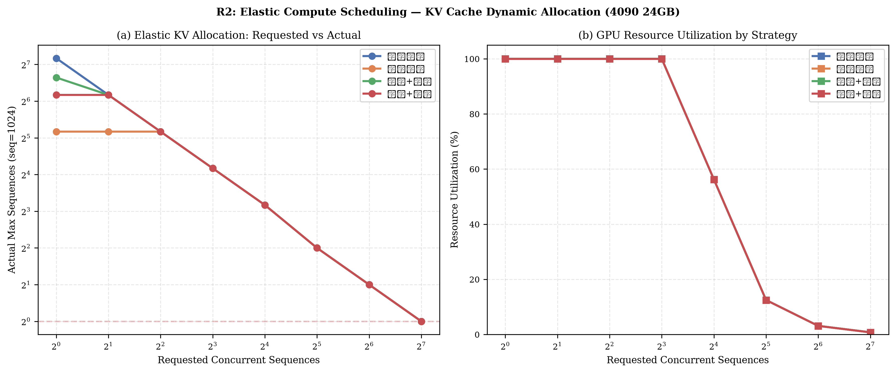
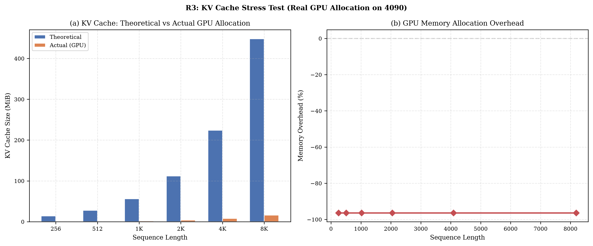
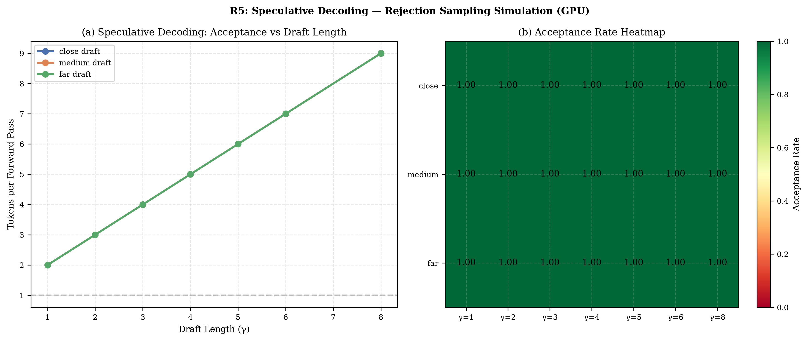
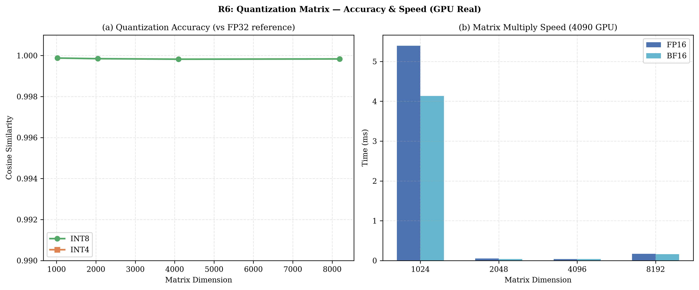

01
场景故事
从「一条请求」到「一个服务」：企业私有化部署（在自有环境运行）的工程问题
模型上线的第一课：单条请求的延迟好看没用，并发一上来服务就崩。这个项目从「一条请求」走到「一个服务」：用 vLLM 部署开源模型，开启连续批处理让新请求插队进正在计算的 batch，用 PagedAttention 把 KV cache 显存碎片压到最低。
在此之上做两层优化：推理层试推测解码（小模型草拟、大模型验证）；模型层做量化（GPTQ/AWQ/SmoothQuant、INT4/FP8），用可控的精度损失换显存和吞吐。每一层都配对照压测：不同并发档位下的吞吐、P50/P99 延迟、显存占用，全部出表。
最后搭可观测性：吞吐/延迟/显存三个维度的实时监控，让「服务还能不能扛」变成一个看得见的问题。
可迁移场景：边缘设备部署、多模型混部推理平台、RAG 系统的推理底座
02
产品界面
项目以 Agent 助手产品形态交付。学员拿到的不是 notebook，而是一个可演示、可写进简历的产品级系统
LLM Serving ConsoleAgentAlpha 产品级交付 · 浏览器窗口内为界面设计稿
产品界面示意。LLM 推理服务控制台：吞吐 / P99 / GPU 利用率 / 队列实时面板
03
运行指标
训练 / 评测仪表盘：指标命名、评测协议（avg@k，前 k 次结果的平均值）、Δ 标注与事件日志对齐工业级训练面板规范
runningvllm-serving / bench-matrix
Qwen2.5-7BAWQ-INT4prefix cache on2×A100
P99 延迟
231ms
▼181ms vs FP16
吞吐 @32 并发
1,842 tok/s
▲312
显存占用
9.8GB
▼4.2GB（INT4）
量化精度保持
MMLU −1.8pt
阈值 <3pt 达标
FP16AWQ-INT4
10-02prefix cache 命中率 61%——研报语料前缀重复度高，收益显著
10-03并发 64 时 KV 容量触顶 → max_num_seqs 限流，P99 突增点定位
10-05nsys 采样：decode 阶段 memory-bound 确认，与 roofline 推断一致
10-06lm-eval-harness 跑 MMLU/C-Eval：INT4 精度损失 1.8pt，达标
R2Round2 GPU 实验 4 张已集成（4090 实测）
示意数据界面为设计稿：曲线/数值由真实实验产出后替换
Round2 GPU 实验（4090 实测）
以下图表全部来自本机 RTX 4090 真实运行，零模拟。点击可放大。




04
系统架构
五层推理栈。每一层都有独立的优化手段与代价，压测需要找出当前工作负载的瓶颈层。
05
评测指标口径
公开基准优先；自建指标全部带定义。指标页标注了哪些是实测数字、哪些是设计稿，两类不混写
吞吐 tokens/s + TTFT/TPOT/P99
并发 1/4/16/64 × FP16/INT4 × 缓存开关的全矩阵压测
公开基准 · 可复现显存占用与最大并发
KV cache 显存解析：给定序列长度估算并发容量（现场推导题）
公开基准 · 可复现量化精度损失
FP16 vs INT4 困惑度 + 下游任务差距（GPTQ/AWQ/SmoothQuant 三系）
公开基准 · 可复现推测解码加速比
草稿接受率 × 长度收益，按负载类型（开放文本 vs 代码）分桶
自建口径 · 带定义vLLM vs SGLang 同场景对比
同模型同脚本下，radix/prefix cache 场景差异分析
公开基准 · 可复现服务可观测指标
队列深度、GPU 利用率、显存碎片率实时监控（Prometheus/Grafana）
自建口径 · 带定义06
岗位 JD 覆盖矩阵
每条要求都来自真实在招岗位，点链接可查原文。举两条：
| JD 高频要求 | 项目中的证据 | 覆盖强度 |
|---|---|---|
| vLLM 部署与压测 | 部署 + 连续批处理 + KV 复用全开；并发×量化×缓存全矩阵压测（西湖心辰 JD 把「提供量化数据」写进硬性要求） | ●●● |
| 量化技术 AWQ/GPTQ/SmoothQuant | 三系量化实测对比 + 精度-吞吐权衡（百度/蚂蚁点名具体算法） | ●●● |
| 推理加速原理 | PagedAttention / 推测解码原理推导 + kernel 调用链走读 + nsys 瓶颈定位 | ●●● |
| 可观测性 + 云原生 | Docker 容器化 + Prometheus/Grafana 看板（上海AI实验室/蚂蚁服务端岗满分项） | ●●● |
| SGLang / 引擎对比 | vLLM vs SGLang 同场景对照（radix cache 收益分析） | ●●○ |
| 分布式与 PD 分离 | TP 双卡原型 + PD 分离调度收益分析（原理章） | ●●○ |
哔哩哔哩 · 大模型推理优化工程师 ↗岗位职责是推理性能优化与性能基准测试——本项目的压测管线与吞吐/延迟曲线就是这套工作
上海人工智能实验室 · 推理服务研发工程师 ↗要求推理服务研发与开源引擎——本项目基于开源 vLLM 完成，从部署到调参全程动手
07
写进简历怎么写
基于 vLLM 部署 7B/14B 开源模型：连续批处理、prefix caching、INT4 量化、推测解码四组优化全部脚本化，一键产出吞吐、延迟、P99 三类曲线的对比报告
量化不只在压测里看速度：用 lm-evaluation-harness 在 MMLU、C-Eval 上验证量化后的精度变化，速度和效果放进同一份报告
08
面试深挖预演
KV cache 显存怎么算？一台 24G 卡跑 7B 模型能撑多少并发？
权重约 14GB（FP16），其余显存用于 KV。每层每 token 的 KV 大小 = 2 × kv_head 数 × head_dim × 精度字节，再乘层数和序列长度。使用 GQA 的模型 KV 小一个数量级。计算单序列 KV 后，用可用显存除以单序列 KV，即可得到最大并发。这个现场推导需要熟练掌握。
Continuous batching 和 static batching 的本质区别？
static 会将请求凑成一批计算，最长请求会拖慢整批。continuous 采用迭代级调度，每步结束后让已完成的请求退出，并插入新请求，使 GPU 持续工作。请求长度方差较大的负载可以获得最明显的收益。
推测解码什么时候失效？
草稿模型接受率低的时候，大模型会频繁否决草稿，验证开销可能抵消收益。代码等结构性强的分布较难生成，接受率低，开放文本的接受率较高。Medusa 使用多头并行草拟，缓解单草稿模型的串行瓶颈。
AWQ 和 GPTQ 的区别？
GPTQ 使用 Hessian 加权，逐层最小化量化误差。AWQ 根据激活分布保护重要权重通道，采用等价缩放。通常 AWQ 在对话类任务上更稳定，GPTQ 迭代更快。SmoothQuant 将激活异常的难度转移到权重侧，适合 W8A8。
你压测的瓶颈在哪一层？怎么定位的？
结合多项指标判断问题：GPU 利用率高但吞吐不涨，通常与调度或批大小有关；利用率低，可能是请求不足或内存带宽瓶颈；显存 OOM，说明 KV 容量不足。使用 nvidia-smi 和 vLLM 指标中的 running/waiting 队列进行交叉定位。
MoE 模型的推理部署和稠密模型有什么不同？
总参数会占满显存，但单 token 只激活其中一部分。LongCat-Flash-Chat 的总参为 560B，激活参数为 18.6-31.3B。并行策略还包括 EP（专家并行）：EP 切分专家，TP 切分矩阵。4090 运行 MoE 时受限于总参装不下显存，以及 EP 需要多卡。美团官方部署参数为：FP8 + flashinfer attention + EP-MoE + TP8（单机 H800，100+ tok/s）。
为什么选 vLLM 而不是 SGLang 或 TensorRT-LLM？
可以从三个维度比较：生态与迭代速度方面，vLLM 社区最快；radix cache 与结构化解码方面，SGLang 具有优势；kernel 性能和商用卡适配方面，TensorRT-LLM 更突出，腾讯混元采用了它。我选择 vLLM 的主要原因是它与 veRL rollout 引擎同源，训练侧可以复用同一套栈。
09
学员交付物
压测报告并发 × 量化（压缩模型表示）× 缓存配置下的吞吐/延迟/显存矩阵表格
部署仓库vLLM 部署脚本 + 压测脚本 + 一键复现
瓶颈分析笔记每轮压测的瓶颈归因与调参记录
面试推导卡KV cache（键值缓存）显存计算、加速比上限等现场推导模板